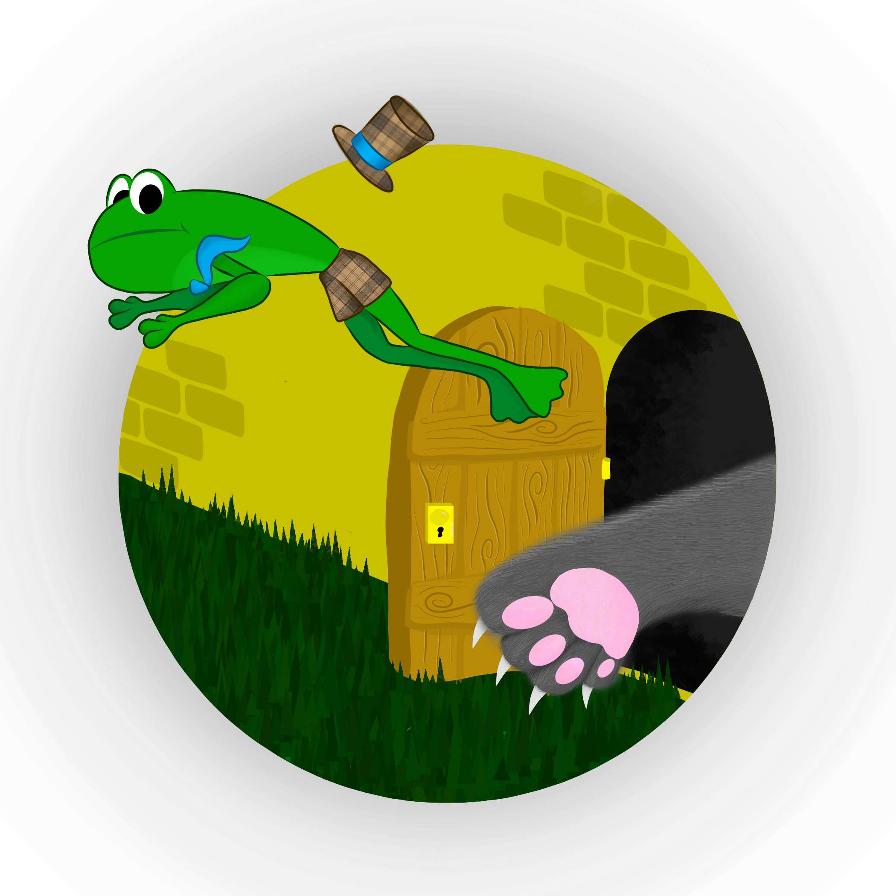
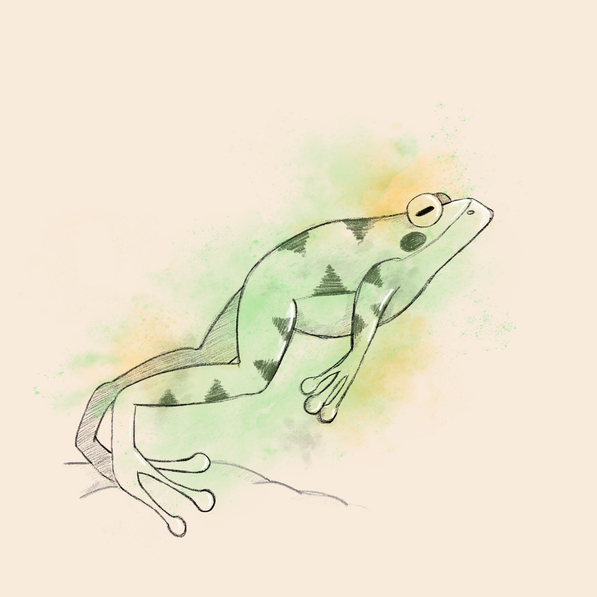
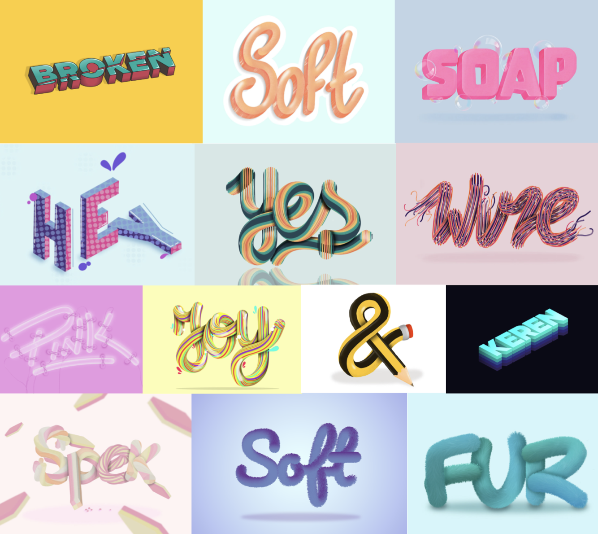
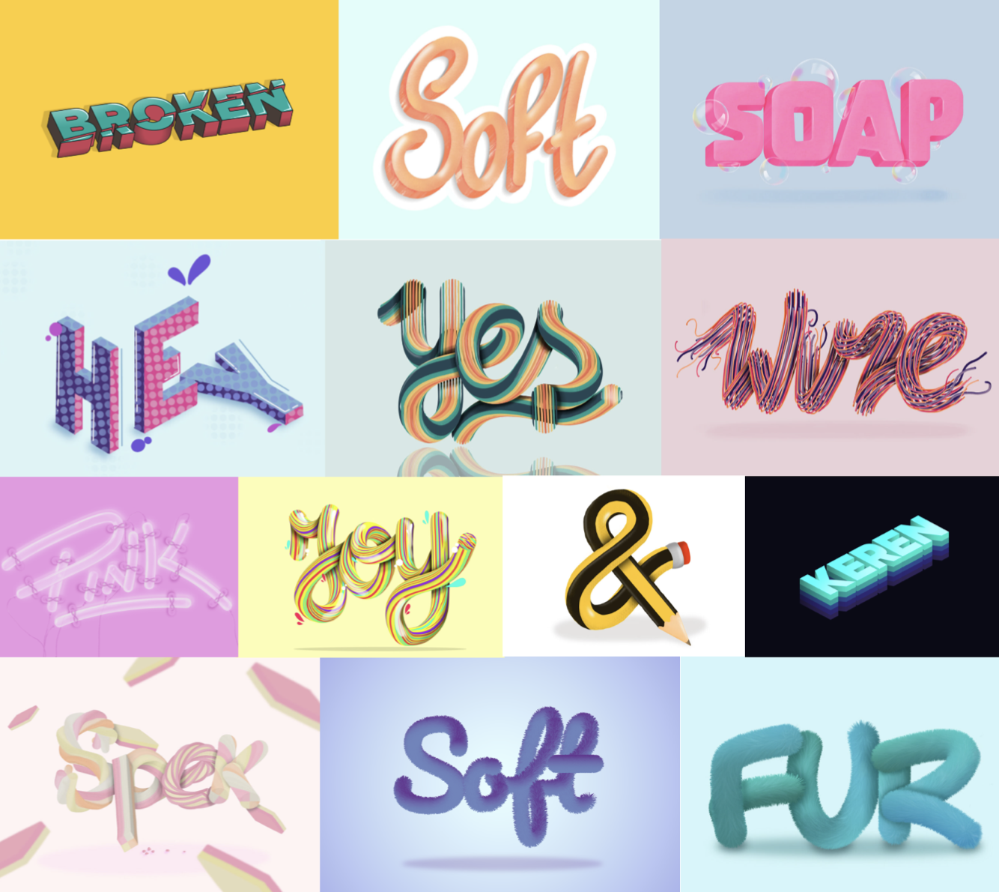
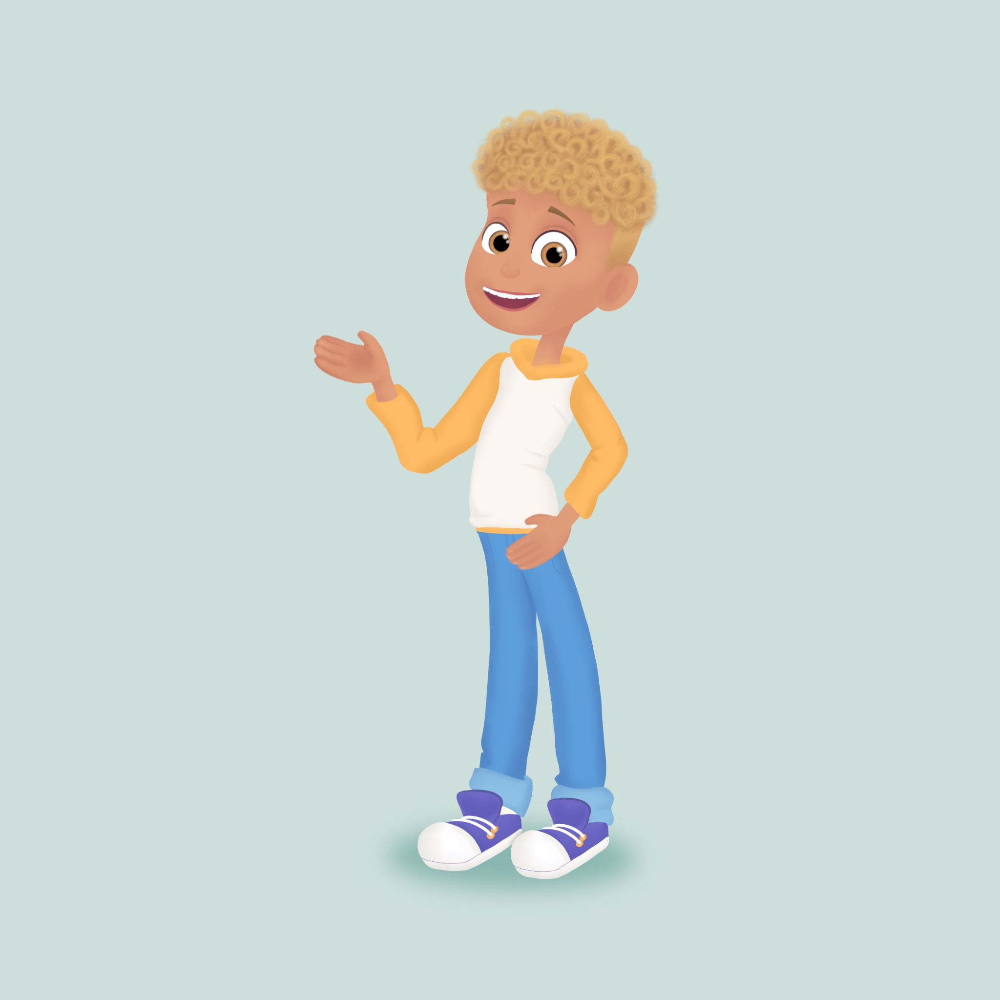
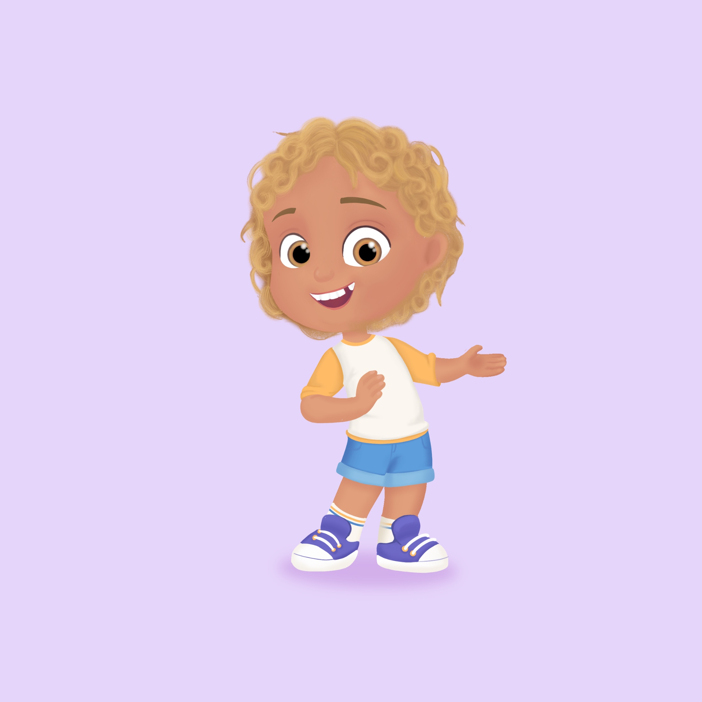
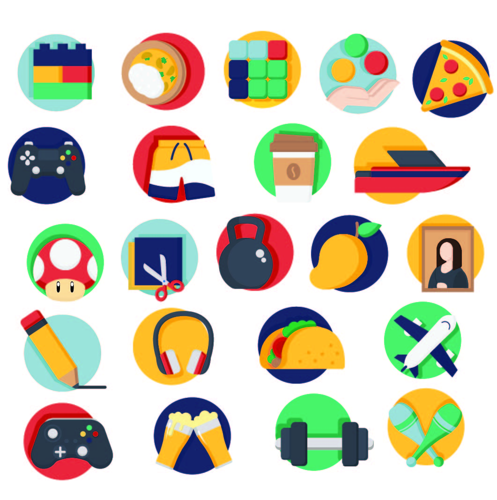
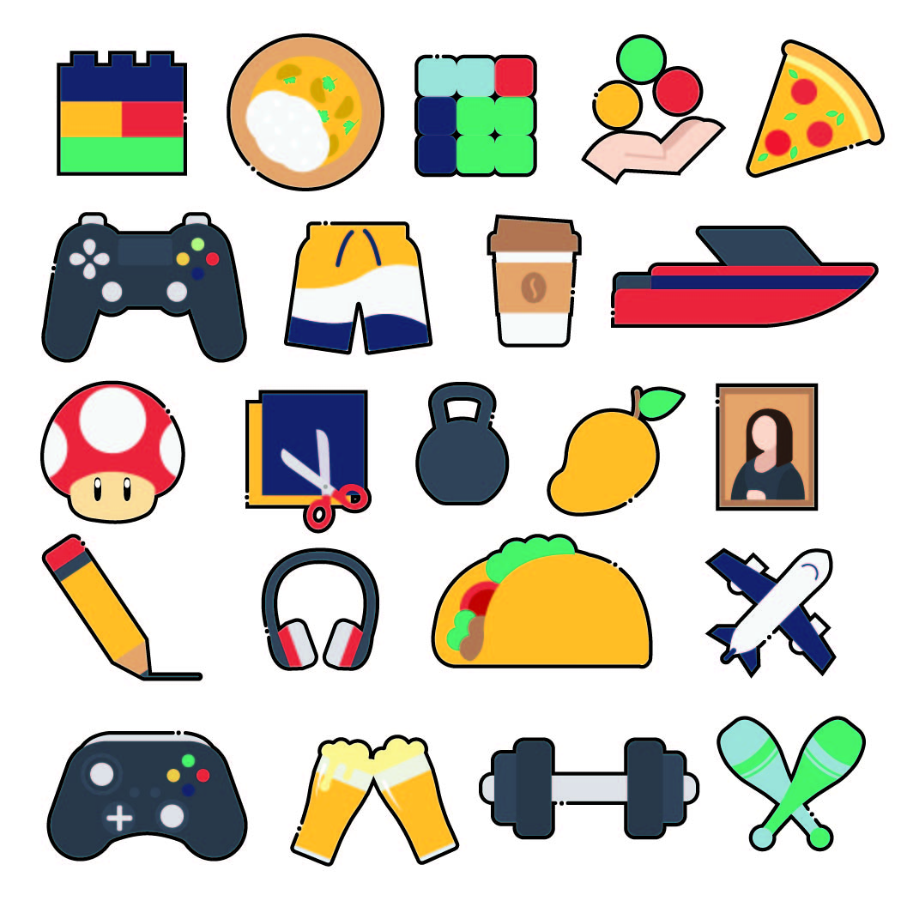
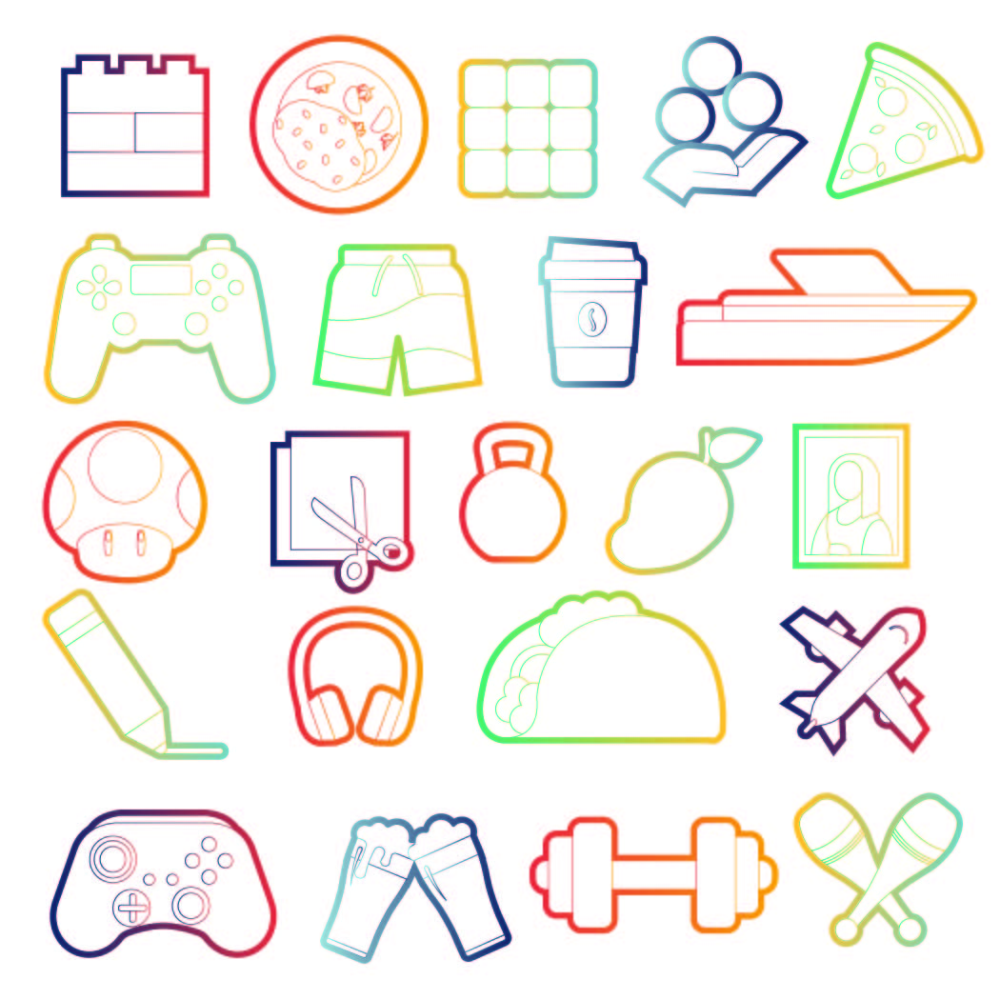

Leerdoel 1
Digitaal leren tekenen met behulp van Adobe fresco
Tijdens de opleiding vind ik dat wij weinig te maken hebben met het ontwerpen. Daarom leek het mij ideaal om tijdens deze minor te werken aan mijn persoonlijke ontwikkeling. Tijdens de eerste blok van de minor heb ik besloten om de basis te leren van het digitaal tekenen. Zo kon ik kennis maken met de tools binnen Fresco. Ik heb voor fresco gekozen omdat ik al een beetje bekend ben met de software van Adobe, dus leek het mij een goede aansluiting aan de kennis die ik al heb.
Tijdens dit leerdoel was mijn doel om illustraties te maken van de gedicht van de dichter Rafael Pomo. Hierin wilde ik twee series illustraties maken. De eerste serie voor de doelgroep kinderen en de tweede serie voor de doelgroep volwassenen. De twee doelgroepen waren algemeen en waren niet leeftijdsgebonden.
 Leerdoel 2
3D illustraties maken
Tijdens deze blok heb ik besloten om tijd te nemen om te leren hoe ik 3D lettering kon maken in programma's die niet perce zijn gemaakt om 3D te illustreren. Ik hoor je al denken “waarom doe jedat niet gewoon in een daarvoor gemaakte software?” Nou laat mij dat je uitleggen. Het leren omgaan met een programma zoals illustrator, fresco ect. Is nog best te doen het lastige hiervan is het leren wanneer je het beste voor de ene programma kiest en wanneer voor het ander. Naast het leren 3D illustreren wilde ik er ook achter komen wat de ene programma wel kan en waar ze in verschillen.
 

Leerdoel 3
Een karakter maken
Tijdens dit blok wilde ik mijzelf wat meer uitdagen en ik wilde mijn ontwikkeling zien in de afgelopen weken. Daarom heb ik gekozen om een serie karakters te maken. Hierin kon ik de skills die ik de afgelopen leerdoelen heb geleerd bij elkaar bundelen en verder leren. Hiermee was het doel dat ik een compleet concept zou maken voor de karakter. Dus niet alleen een “poppetje” tekenen maar echt zijn persoonlijkheid verzinnen en deze te reflecteren in de illustraties. Daarbij was een van mijn doelen ook om CJ zo te ontwerpen dat hij herkenbaar zou blijven ondanks zijn leeftijd. Daarbij hebben jij en ik unice karakteristieken die er voor zorgen dat we herkenbaar blijven. Deze karakteristieken wilde ik ook voor CJ ontwerpen en toevoegen.
 Leerdoel 4
Objecten illustreren
Tijdens de laatste blok is ons gevraagd om in groepsverband een portfolio te maken. Om een geheel te kunnen maken binnen de portfolio was ik de verantwoordelijke om onze hobby’s te illustreren. Dit met het doel om een beetje persoonlijkheid van onszelf te tonen binnen de website. Hiermee wilde ik leren om objecten te illustreren die anderen mij vragen. De blokken hiervoor heb ik telkens gemaakt wat ik zelf wilde. Maar nu was het doel het leren maken wat anderen vragen en hun verwachtingen te bereiken. Hiermee moest ik vaak met ze in gesprek om feedback te krijgen en uiteindelijk te maken wat een ander wilt. Daarnaast wilde ik ook leren hoe ik van een object meerdere stylen kon maken en uiteindelijk ook het leren een geheel maken van alle objecten bij elkaar.
  